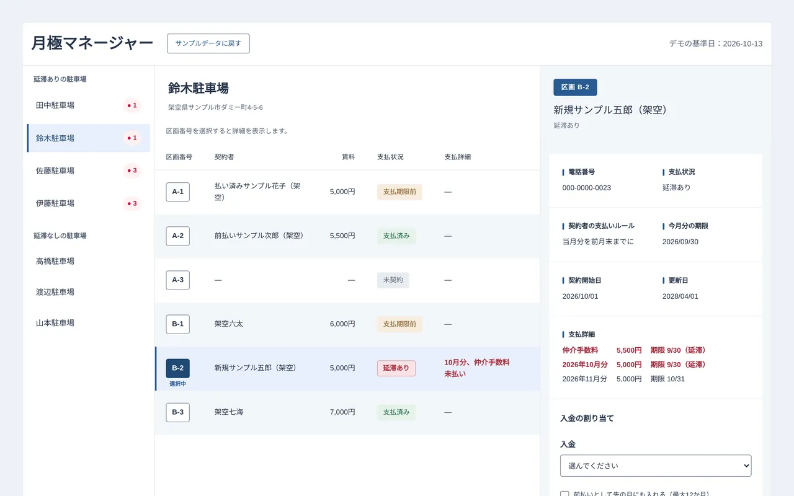
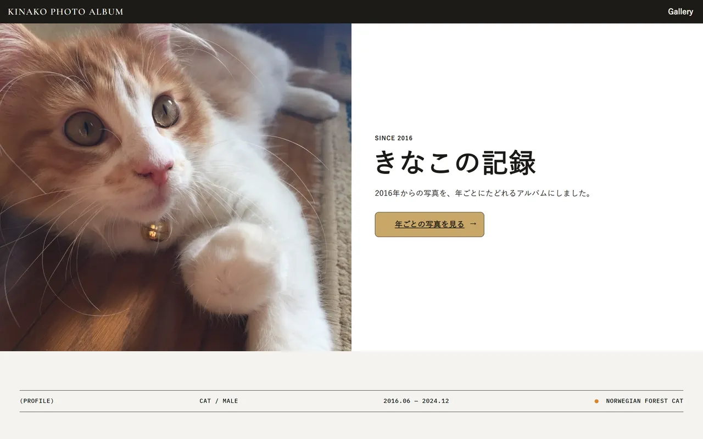

 Tsukigime Manager 知人が管理する月極駐車場での利用を想定した、契約・入金管理アプリのMVPです。区画ごとの支払状況を色で確認でき、1件の入金を複数の区画や月に分けて割り当てられます。PCでの管理業務を想定し、デスクトップ向けの画面設計にしています。 React TypeScript Vite Vitest View demo GitHub
 KINAKO PHOTO ALBUM 写真を撮影年ごとにたどれるフォトアルバムサイトです。キーボード操作や音声読み上げに対応し、WebPとsrcsetで画像の読み込みを軽量化しています。 HTML CSS JavaScript View site GitHub